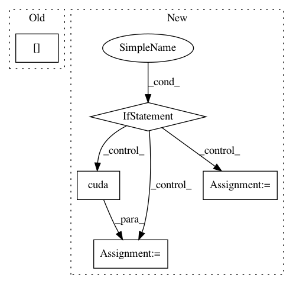

e2db3b3f1d3d23cd5bc1e295835e0f4b33e95447,examples/cora_gcn.py,,,#,57
Before Change
cur_test = test(test_mask)
acc.append(cur_test)
print("Run:", run, "Test Accuracy:", acc[-1])
acc = torch.FloatTensor(acc)
print("Mean:", acc.mean(), "Stddev:", acc.std())
After Change
model = Net()
if torch.cuda.is_available():
train_mask, val_mask = train_mask.cuda(), val_mask.cuda()
test_mask, model = test_mask.cuda(), model.cuda()
optimizer = torch.optim.Adam(model.parameters(), lr=0.01, weight_decay=0.005)
def train():
In pattern: SUPERPATTERN
Frequency: 3
Non-data size: 5
Instances
Project Name: rusty1s/pytorch_geometric
Commit Name: e2db3b3f1d3d23cd5bc1e295835e0f4b33e95447
Time: 2018-03-07
Author: matthias.fey@tu-dortmund.de
File Name: examples/cora_gcn.py
Class Name:
Method Name:
Project Name: dpressel/mead-baseline
Commit Name: 0e79a49116c7e19c51a9442a4da50a7ac3b7a3d2
Time: 2021-02-11
Author: dpressel@gmail.com
File Name: baseline/pytorch/classify/model.py
Class Name: ClassifierModelBase
Method Name: make_input
Project Name: facebookresearch/Horizon
Commit Name: de10f79e39f04779438248be76633e55a11cba41
Time: 2020-04-23
Author: kittipat@fb.com
File Name: reagent/types.py
Class Name: TensorDataClass
Method Name: cuda